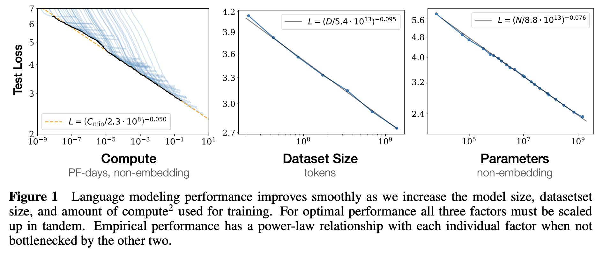
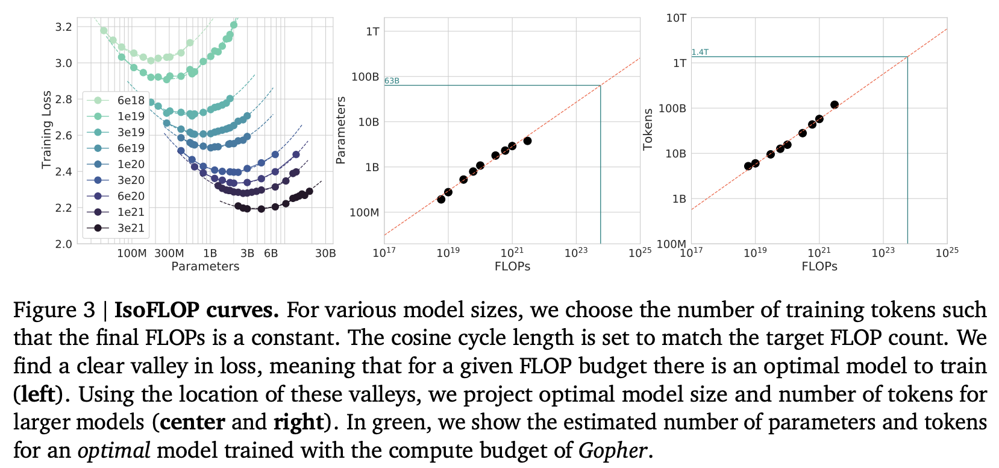

近年、深層学習の飛躍的な進歩を牽引してきた重要な要素の一つに「Scaling Laws（スケーリング則）」の経験的発見がある。モデルのパラメータ数（\(N\)）、データセットのサイズ（\(D\)）、および計算量（\(C\)）をスケールアップさせると、学習損失（Loss）がべき乗則（Power-law）に従って予測可能に減少するというこの法則は、Large Language Model (LLM) やFoundation Modelsの開発において、計算資源を最適に配分するための羅針盤となってきた。
本稿では、Lilian Weng氏が2026年6月24日に公開した最新のブログ記事「Scaling Laws, Carefully」の知見をベースに、Scaling Lawsが何を予測するのか、計算量の最適配分（Compute-optimal allocation）のメカニズム、KaplanらとChinchillaの結論の相違とその和解、さらにデータ制約（Data-limited）領域での挙動や外挿（Extrapolation）におけるフィッティングの難しさについて、最新の理論的背景も交えながら深く掘り下げて解説する。
Scaling Lawsの黎明期：機械学習における損失の予測可能性
深層学習においてScaling Lawsが主流の概念となる以前から、汎化誤差（Generalization error）とスケールの関係性は理論・経験の両面から研究されてきた。
2010年代半ば、Hestnessら（2017）は、機械翻訳や言語モデリングなど複数のドメインにおいて、データサイズに対する汎化誤差がべき乗則に従って減少することを確認した。興味深いことに、アーキテクチャの変更はべき乗則のオフセット（切片）を変化させるものの、指数（Exponent）にはほとんど影響を与えず、この指数はアーキテクチャではなく問題ドメインの特性であることが示唆された。
その後、Rosenfeldら（2020）は、誤差をモデルサイズ \(N\) とデータサイズ \(D\) の結合関数としてモデル化するアプローチを提案した。彼らは、一方を固定した場合、もう一方に対して誤差がべき乗則で減衰することを経験的に示し、以下のような結合形式を導き出した。
\[ \hat{L}(D, N) \approx \frac{A}{N^\alpha} + \frac{B}{D^\beta} + E \]
ここで \(A, B > 0\)、$ , $ は定数であり、\(E\) は \(N\) にも \(D\) にも依存しない還元不能な誤差（Irreducible loss）である。この定式化により、小規模な実験結果から大規模な領域における性能を予測するフレームワークの基礎が築かれた。
無限データ領域におけるScaling Laws：Kaplan vs Chinchilla
Transformerアーキテクチャの台頭により、言語モデリングにおけるScaling Lawsは新たな局面を迎えた。ここでは、歴史的に重要な2つの研究間の対立と、その後の見解の統一について解説する。
Kaplan et al. (2020) のスケーリング則
Kaplanら（2020）は、交差エントロピー損失 \(L\) がモデルサイズ \(N\)（Embedding層を除く）、データセットサイズ \(D\)、および計算量 \(C\) のそれぞれに対してべき乗則でスケーリングすることを示した。
彼らの最も影響力があり、後に議論の的となった結論は「Compute-optimal allocation（計算量の最適配分）」に関するものである。限られた計算予算 \(C\) が与えられた場合、小さなモデルを最後まで収束させるよりも、非常に大きなモデルを少ないステップ数で学習させ、完全に収束する前に停止する方が効率的であると主張した。具体的には、\(N_{opt} \propto C^{0.73}\) という関係を見出し、計算量が10倍になった場合、モデルサイズを約5.5倍にする一方で、学習トークン数は約1.8倍に留めるべきであるとした。

Chinchilla Scaling Laws (Hoffmann et al., 2022)
Kaplanらの結論に異を唱えたのが、Hoffmannら（2022）による通称「Chinchilla」論文である。彼らはより厳密な実験設計を行い、モデルサイズにEmbeddingパラメータを含めた上で、固定の計算予算 \(C \approx 6ND\) の下でのリソース配分を再評価した。
IsoFLOPプロファイルなどの手法を用いた結果、Chinchillaは \(N_{opt} \propto C^{0.5}\) という結論に達した。つまり、最適性能を得るためには、計算量の増加に伴い、モデルサイズとデータセットサイズを同等の割合でスケールさせるべきであるというものである。当時の多くのLarge Language Model (LLM) はモデルサイズに対して学習データが圧倒的に不足している「Undertrained」な状態にあり、パラメータ数を増やすよりも学習データを増やすべきであることが実証された。実際、Chinchillaモデル自身も、当時の巨大モデルより小規模でありながら、より多くのデータで学習されたことでそれらを凌駕する性能を示した。

KaplanとChinchillaの差異の調和
両者の結論の乖離は、Scaling Lawsのフィッティングの感度の高さを示している。Pearce & Song（2024）は、この矛盾を解消するための重要な要因として「Embeddingパラメータの扱い」と「実験スケールの違い」を指摘した。
Kaplanらは比較的小さなモデル（最大1.5B）を中心に実験を行っていたが、小規模モデルにおいては全パラメータに占めるEmbedding層の割合が無視できない。全パラメータ \(N\) とEmbedding層を除くパラメータ \(N_{\setminus E}\) の関係を \(N = N_{\setminus E} + \omega N_{\setminus E}^{1/3}\) と定式化し、Chinchillaの方程式に代入すると、\(C_{\setminus E}\) と \(N_{\setminus E}\) の関係はもはや綺麗なべき乗則にはならない。しかし、小規模な領域で局所的に近似すると、その指数（Local exponent）はKaplanらが算出した \(0.73\) に極めて近づくことが証明された。
データ制約（Data-Limited）領域への移行とデータ品質
スケーリングを続ける上で「無限の高品質なユニークデータ」という前提は崩れつつある。事実、AIの進化が「Data wall（データの壁）」に衝突するかどうかが活発に議論されている。
データ品質の影響
近年の研究では、データ品質（Data quality）の重要性がScaling Lawsにおいても形式化されている。ノイズの多い巨大なデータセットよりも、小規模でもクリーンで多様なデータセットの方が優れた性能をもたらす。無次元の品質パラメータを導入した研究では、高品質なデータは必要なモデルサイズや計算リソースを大幅に削減できる（小さなモデルの性能を補償できる）ことが示されている。
データ重複とオーバーフィッティングのペナルティ
データが枯渇した場合、同じデータを複数エポック学習させる必要がある。Muennighoffら（2023）は、データの繰り返しが学習に与える影響を調査し、トークンが繰り返されるたびにその価値が指数関数的に減衰（Exponential decay）するというモデルを提案した。
さらに最新のLovelaceら（2026）の研究では、モデルサイズとデータの繰り返しの相互作用を明示的にモデル化している。彼らは「Capacity ratio（キャパシティ比）」、すなわちユニークなトークン数に対するパラメータ数の比率 \(N / U_D\) に着目し、以下のようなオーバーフィッティングのペナルティ項（赤字部分）を追加した。
\[ \hat{L}(N, U_D, R_D) = E + \frac{A}{N^\alpha} + \frac{B}{\big(U_D (1 + R_D)\big)^\beta} + \color{red}{P \cdot R_D^\delta \cdot \left(\frac{N}{U_D}\right)^\kappa} \]
ここで \(R_D\) は反復回数（Epochs - 1）である。このモデルは、エポック数が増えるほど、またモデルがデータに対して過剰パラメータ化（Over-parameterized）されているほど、ペナルティが非線形に増大することを示している。データ制約シナリオ下では、単にモデルを巨大化させるよりも、複数エポックの学習にリソースを割り当てる方が有益である場合が多い。
なぜ「べき乗則」が成立するのか？（理論的背景）
経験的に観測されるScaling Lawsがなぜ「べき乗則」の形態をとるのかについては、単なる経験則を超えた理論的な裏付けが進められている。
- データ多様体の低次元性: Sharma & Kaplan (2020) は、言語モデリングを「低次元データ多様体（Low-dimensional data manifold）上の回帰問題」として捉える仮説を提唱した。パラメータ数 \(N\) が増えることで、この多様体をより細かく分割できるようになり、汎化誤差が減少する。この分割の解像度がべき乗則の形をとるという理論である。
- 知識の量子化モデル: Michaudら (2023) や Brill (2024) は、知識やスキルが離散的（Quantized）なチャンクとして学習されると仮定する。出現頻度が高いスキルから先に学習され、まれなスキルが後に学習される過程が、全体として滑らかなべき乗則の減衰を生み出す。
- 分散制限と解像度制限の双対性: 無限データや無限幅の極限において、モデルのゆらぎが減少することで性能が向上する「Variance-limited（分散制限）」レジームと、モデルが滑らかなデータ多様体を効果的に解像する「Resolution-limited（解像度制限）」レジームの相互作用からべき乗則が創発するという理論的枠組みも提唱されている。
現実世界におけるフィッティングの罠と今後の展望
Scaling Lawsの数学的形態はシンプルであるものの、現実のデータに対するフィッティング（Fitting）は極めて困難を伴う。我々は安価な小規模モデルで法則を当てはめ、そこから何桁も大きなモデルの性能を「外挿（Extrapolation）」しなければならない。
対数-対数（Log-log）プロット上での微小なズレや、損失の精度（丸め誤差）、ノイズレベル、フィッティングに使用するスケールの範囲の違いが、外挿結果に破壊的な影響を与える。実際、Besirogluら（2024）は、ChinchillaのMethod 3におけるパラメータフィッティングを再評価し、最適化アルゴリズム（L-BFGS）におけるHuber損失の「合計」ではなく「平均」を用いてしまったことによるLoss scaleの異常が、早期終了（Early stopping）を引き起こし、結果を歪めていたことを発見している。
また、データ制約領域などの不確実性が高いシナリオでの意思決定を支援するため、単なるべき乗則関数の適用を超え、ベイズ推論（Bayesian frameworks）を用いて不確実性の定量化（Uncertainty quantification）を行う新たな外挿手法の開発も進んでいる。
まとめ
Scaling Lawsは、深層学習の進歩を俯瞰し、莫大な計算資源を投下する際の重要なレンズを提供し続けている。しかし、その強力な予測能力を真に活用するためには、KaplanとChinchillaの対立が示した実験設計の機微や、限界を迎えつつあるユニークデータの再利用（Epoch学習）がもたらすペナルティ、そして外挿における不確実性を深く理解する必要がある。
単なる「規模の拡大」から、「データ品質・モデルアーキテクチャ・計算資源の極限の最適化」へと移行しつつある現在のDeep Learningの最前線において、Scaling Lawsのニュアンスを読み解くことは、次世代のAIパラダイムを切り拓くための必須教養と言えるだろう。